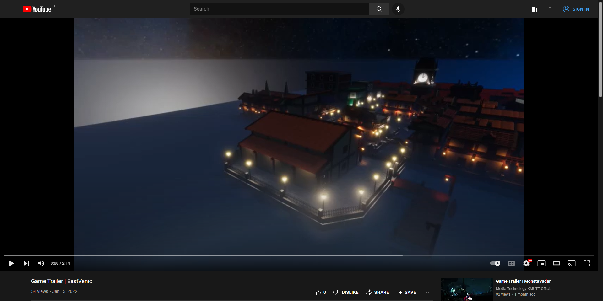
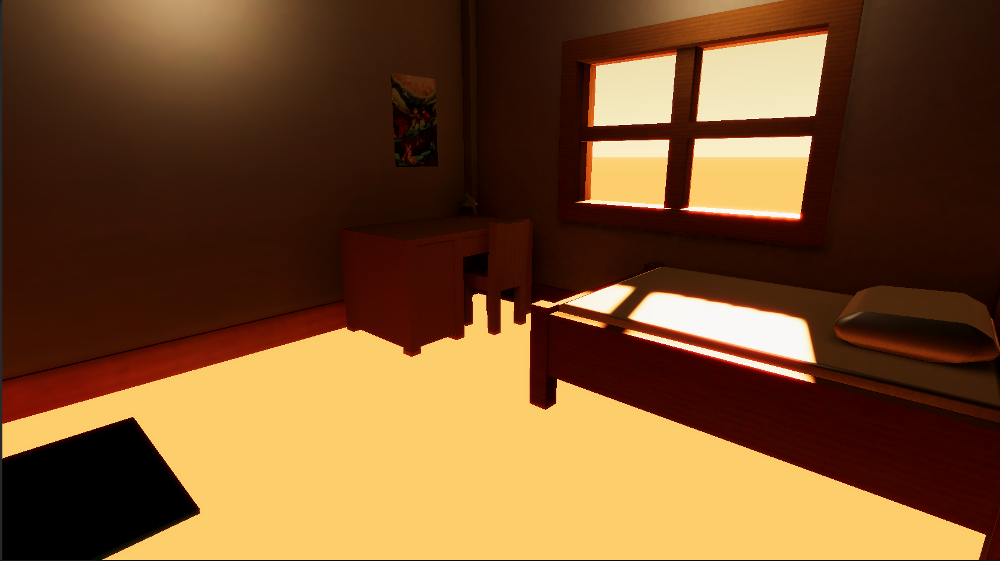
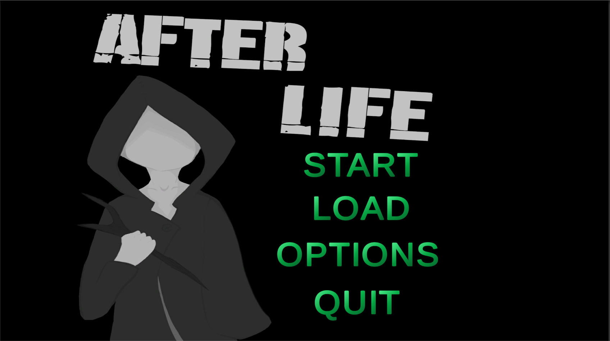
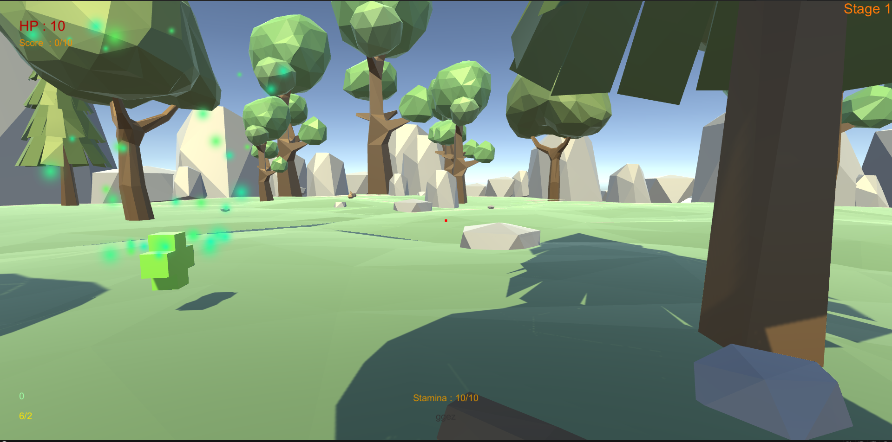

EastVenic
EastVenic เป็นโปรเจคร่วมกันพัฒนา 3 คนโดยมีผมเป็นคนออกแบบ environment และเป็นคนขึ้นโมเดลเป็นหลัก โดยมีคอนเซปในการออกแบบเป็น การผสมผสานกันระหว่างสไตล์อาคารแบบ Western และเมือง Venice โดยได้ใช้โปรแกรม Maya ในการปั้นโมเดลออกมาภายใต้คอนเซ็ป Low polygon แล้วเมื่อนำไปกาง UV เพื่อนำไปทำ Texture ใน Photoshop แล้วเมื่อเสร็จแล้วก็นำเอาโมเดลไปจัดแสงและทำ Cinimatic ต่อใน Unity โดยสามารถ รับชมผลงานได้ผ่านช่องทาง Youtube ตามลิงค์ที่ใส่เอาไว้ด่านล่างของข้อความนี้
EastVenic

Zlyhanie
Zlyhanie เป็นโมเดลตัวละครที่สร้างขึ้นมาภายใต้คอนเซ็ป Model for game โดยจะเป็นการปั้นตัวละครขึ้นมาแบบ Low polygon ซึ่งมีคอนเซ็ปในการออกแบบ ตัวละครเป็นเมดนักสู้ แล้วเมื่อปั้นเสร็จแล้วก็ได้นำไปทำการ Rig เพื่อนำไปทำอนิเมชั่นของตัวละคร

HDRP Project
HDRP Project เป็นโปรเจคที่ได้ทำขึ้นในคาบเรียนเรื่องการจัดแสงโดยใช้ HDRP ภายในโปรแกรม Unity โดยจากภาพที่นำมาแสดงให้ดูนี้ก็จะเป็นภาพที่ได้มาเมื่อได้ทำการ จัดองค์ประกอบของแสงเสร็จสิ้นแล้ว
Horror House
Horror House เป็นโปรเจคในการปั้นโมเดลชิ้นที่ 2 ของผม โดยโประเจคนี้ก็จะเป็นการปั้นโมเดลตัวอาคารออกมาภาใต้คอนเซ็ปของ Low polygon

Bounce Seeker
Bounce Seeker เป็นโปรเจค Moblie game ของผมที่ได้ทำการอัปโหลดลงใน Play Store โดยตัวเกมจะเป็นแนว 2D side scroll action game ที่มีจุุดมุ่งหมายของเกมคือการเดินทางจากจุดเริ่มต้นไปยังจุดจบ โดยเกมเพลย์หลักก็จะใช้การลากเส้นบนหน้าจอของสมาร์ทโฟนเพื่อทำสิ่งต่างๆภายในเกมเป็นหลัก ซึ่งสามารถเข้าไปโหลดแอปนี้ได้ผ่านทางลิ้งค์ด่านล่างของข้อความนี้
Bounce Seeker

After life
After life เป็นโปรเจคเกมแรกที่ผมได้ทำร่วมกับเพื่อนร่วมทีม โดยตัวเกมนี้ก็จะเป็นเกมแนว third person shooter game โดยใช้โปรแกรม Unity ในการสร้างขึ้นมา

My second project
My second project เป็นโปรเจคของ Unity ที่ผมได้สร้างเกมขึ้นมาอย่างจริงจังเป็นเกมที่ 2 โดยตัวของโปรเจคนี้จะพัฒนาเรื่องของตัวระบบการทำงานมากขึ้น โดยได้นำเอาฟังชั่นต่างๆอย่างการรับข้อมูลจากไฟล์ CSS การนำเอา Unity Event มาจัดการเรื่อง Event ต่างๆและการนำเอา navmesh agent มาสร้างตัวศัตรูขึ้นมาเป็นต้น